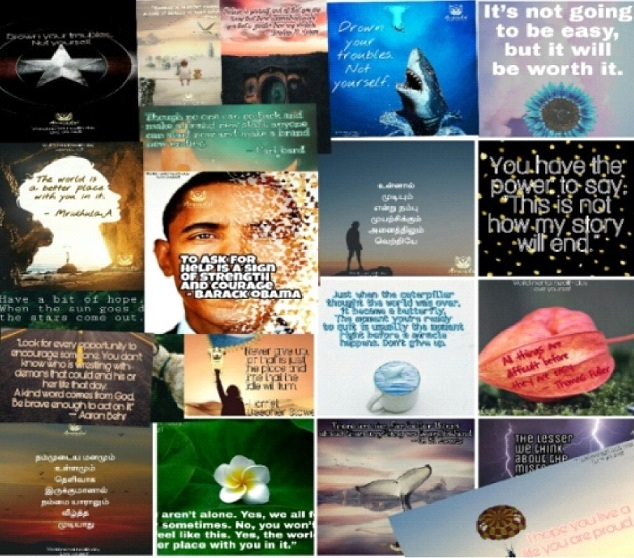
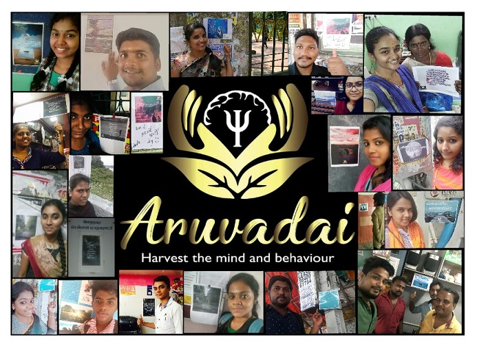

To provide holistic mental health services

A practicing counseling psychologist who has varied experiences in working with children and adults. She completed masters in counseling psychology . Her motivation was never ending as she also done Certificate course on current trends indevelopmental disability, advanced diploma in NLP and diploma in Montessori solution focused brief therapy, cognitive behavior therapy and dialectic behavior therapy. Through ARUVADAI she started off her career in private practice where she provided couple counseling by using therapeutic techniques.
ARUVADAI is guided by the mission to offer professional psychological services in different ventures by training specific population like students, parents and teachers. This is culminated by conducting training programs on safe touch, unsafe touch and child sexual abuse in several places such as bharathiya vidhya bhavan school, happy homes orphanage, mithra-rehab for children with disability and government schools. she had also interned with hospitals like STanley government hospital, Psymed psychiatric hospital and wisdom deaddiction centre. She is the facilitator and is willing to travel to offer the training. Initially worked as a Counseling psychologist in Mind-cafe and Student counselor in punjab associations adarsh group of schools. She was intern in psymed and wisom hospittals, YRG Care, and Nirmala sishu bhavan. the love of research has brought her a best paper award in International conference on “Parenting styles: Its influence on internet usage among young children”. Her vision is to provide holistic mental health services.
PROFESSIONAL GROWTH
Academic qualification:
M.SC Counseling Psychology
Paper publication:
“Parenting styles: Its influence on internet usage among young children”.
" The effect of love styles on hope and marital attitude"
Experience:
Counseling psychologist in Mind-cafe
Student counselor in punjab associations adarsh group of schools.

She is a practicing counseling psychologist . She completed her masters in applied psychology in the year of 2018. She has also done Certified course on Advanced diploma in NLP, Solution Focussed Brief Therapy, Cognitive behavior therapy and Skills for Personal Effectiveness. She has facilitated training program in school as part of GLAD (Global leadership and development) project. She has also successfully completed training program for Special children and employess in VBJ. She provided psychological support services for children at montfort sirahugal and mindwellness for old age people in charu home for aged.
She worked as a intern in Wisdom and Psymed hospitals. She has been presented and published a paper on “A Study on the Relationship between Home environment and Adjustment among School Students in Chennai city” at International Conference on School Mental Health in Tiruchirapalli. She incorporates therapeutic techniques such as Solution focused brief therapy and Cognitive behavior therapy in her treatment modality. She possess knowledge and experience in conducting few psychometric assessments. Moreover, she is also practicing Relaxation therapy for stress reduction and anxiety management. She has been voluntered to provide post crisis counseling offered by Mind Cafe for gaja cyclone victims like school students and women in Neduvasal. Her current focus is to empower and enrich the lives of people those who are in need of help for psychological well-being.
PROFESSIONAL GROWTH
Academic qualification:
M.SC Counseling Psychology
Paper publication:
“A Study on the Relationship between Home environment and Adjustment among School
Students in Chennai city”
" The effect of love styles on hope and marital attitude"
Designation:
Counseling psychologist – Mind cafe.
Post-crisis counseling:
Gaja cyclone victims.
Training programs offered:
For schools students, old age people and employees in VBJ.

She is working as a special educator in VXL Educational Trust. She completed her masters in applied psychology in the year of 2018. She has also done Certified course on montessori training and Skills for Personal Effectiveness. She worked as a intern in Wisdom and Psymed hospitals. She conducted training program for special children on Health and Hygiene. She also provided psychological support services to children at montfort sirahugal. She is very patient and understanding when dealing with children.
PROFESSIONAL GROWTH
Academic qualification:
M.SC Applied Psychology
Designation:
Special Educator – VXL Educational Trust
Post-crisis counseling:
Gaja cyclone victims.
Training programs offered:
For special children and school students
SERVICES OFFERED:
training programs – Aruvadai conducts training programs which is well organised by the trainers and carried out in a systematic way throughout the session. Through our training programs, we would like to enlighten their potentials, enhance their resourceful part for personality development and empower their self in such a way to deal with all kinds of problems effectively and efficiently.
Counseling – Aruvadai provides various areas of counseling to get better understanding about their problems and their personality. We used to create a safe and supportive atmosphere to find out solutions objectively.
Psychometric assessments – aruvadai provides psychological testing that are more reliable and valid. It helps us to assess and evaluate the intensity of problem.
MENTAL HEALTH AWARENESSMENTAL HEAL TH AWARENESS
WORLD MENTAL HEALTH DAY (10/10/18)

A Glimpse of Aruvadai- Psychological Support services in Action on 10/10/18

Every year world health organization follow a theme as part of World mental health day. Likewise, in the year of 2019 also they had formulated a theme which was on “YOUNG PEOPLE AND MENTAL HEALTH IN CHANGING WORLD. Healthy young adults are the significant contributors to the workforce, their families and communities and society as a whole. Being a responsible citizen, it is our duty to create a happy and healthy environment for the students to grow and evolve personally and professionally.
Keeping this in mind, ARUVADAI – Psychological support services had a vision to prevent mental distress and promote mental resilience for young people across the city. Through the statistics, we came to know the rate of suicides had been increased among the students from diverse backgrounds since 2014. Shockingly, Chennai ranks the top in suicides that are been involved by Young population. Considering these findings, On behalf of ARUVADAI – Psychological support services, a team of youngsters have decided to do an innovative act and that would bring out positive impact on mental well being among people all over the city. As an initiative for mental health awareness, we started to prepare posters which was carried on positive affirmation quotes connoted to suicide prevention. With the help of energetic and enthusiastic youngsters, we posted the quotes in 50 different places of chennai to public's notice where suicide has happened so far and in places that are vulnerable to invite suicidals. The places include Bridges, railway stations, Schools, Tea shops, Bus stands, Super markets, Petrol bunks, Hospitals, Residential Areas.
A step further ahead, we apporoached the people randomly and asked them how do they feel while they look at these posters in some public places. With their permission, we recorded their response in a video to create a platform for others to know the importance of mental well being. The public’s response to this event was very well recognised and appreciated. They felt that this should be done in entire state to prevent suicide among young minds. On a positive note, they suggested that talking to themselves positively and productively is a way to seek out solutions for all kinds of problems.
The child sexual abuse is rapidly increasing day by day across the city irrespective of age, gender, education, social and family status. More than 50% of children were being abused in india. Educating the child about sexual abuse by differentiating safe and unsafe touch leads to ambiguity about themselves and afraid of society too. It is our responsibilty to provide safe and secure environment for young children. By holding this conviction, ARUVADAI started to educate and empower the children on safe and unsafe touch in government schools. The importance of safe and unsafe touch was conducted on government schools because most of the children are from low socio-economic status where their parents are not educated to aware of the child's problems, acknowledge and accept their child feelings too. It is again turbulence period for children to talk out their feelings openly in such situations. While doing these program, many children broke down in tears uncontrollably and somehow the facilitator and teachers made them feel comfort. It is evident that they have experienced such traumatic incidents and did not share to anyone else. We believe that “Little drops of water make the mighty ocean”. Through our training programs we would like to bring awareness about how to be more confident and courageous to protect themselves from the dangerous sitations. Prevention of child sexual abuse begins with 3 A’S: